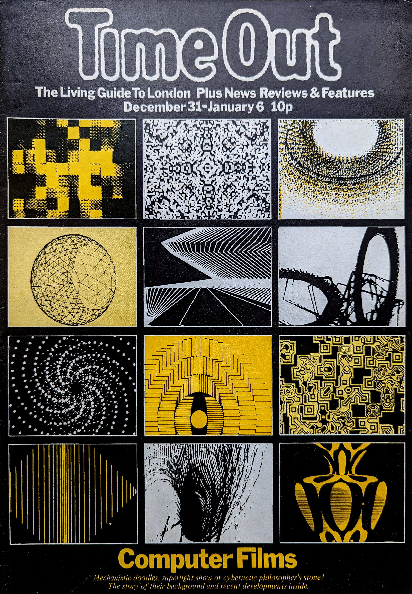
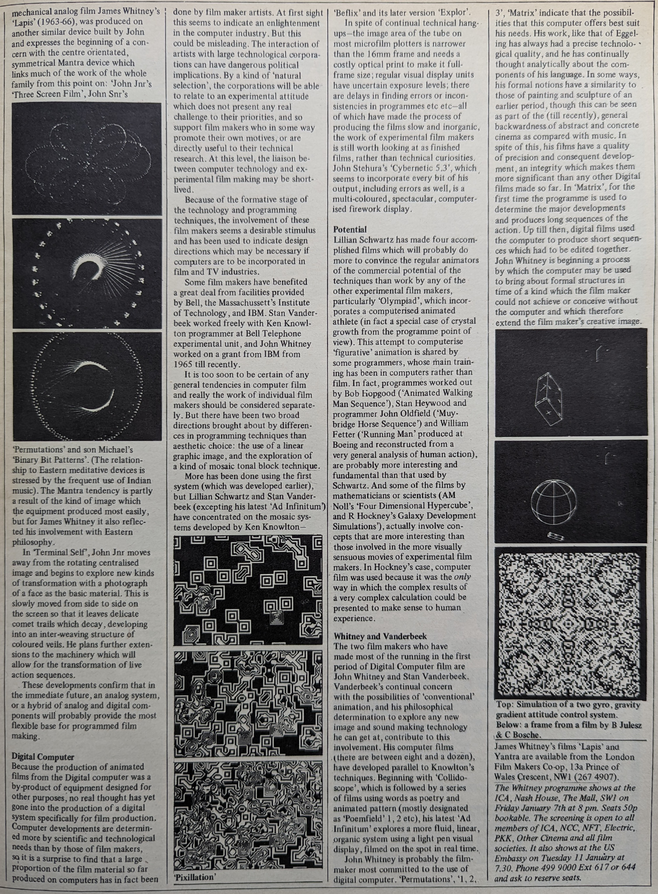
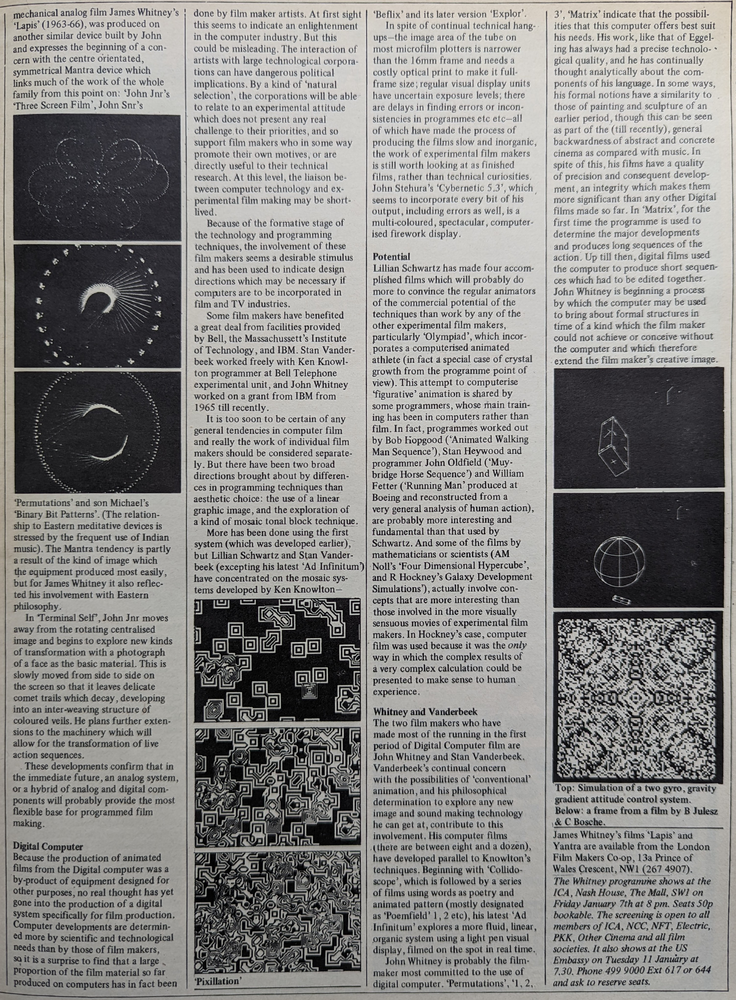

Timeout Magazine December 1971
Computer Films
Mechanistic doodles, superlight show or cybernetic philosopher's stone? The story of their background and recent developments inside.
 

Computer Films
The Whitney Family Computer Film show is touring Europe. Next stop is the ICA, Nash House, The Mall. Friday January 7. It's a large and amazing programme of films from the large and amazing Whitney family who have cut out for themselves a sizeable chunk in the history of the abstract film and all in two generations. John Snr worked in animation (did film titles eg 'Vertigo' with Saul Bass) and first turned to computerisation to by-pass the labour of frame by frame drawing. John Jnr has provided film loops for Rock concerts (for the Dead) and his prototype for the Three Screen Film' was first shown at the Monterey Pop Festival. Generally, computer films fall into the underground/ experimental film category and suffer from the distribution hassles this implies. Occasionally they are used, in part or whole, to back tele vision's more adventurous rock shows. Recently, computer films have been extolled in Gene Youngblood's monu mental 'Expanded Cinema'. Visually, they range all the way from the pure and intensely dramatic to the whim sical and there is always something in their structure that comes very close to that of music. Malcolm Legrice, himself an experimenter in this area, traces the development of these new techniques and the contri bution of the Whitneys.
Since 1965 it has been possible to make John and James a complete film by writing a programme for a computer. The programme is no different in concept to any other com- puter programme, simply a set of instructions to a very fast calculating device. What has made this feasible has been the use of the cathode ray tube for displaying the output information from computer calculations, but more particularly the linking of this to a microfilm camera to record the output.Almost by coincidence the film used for microfilm records is identical to 16mm movie film. The drawing of a diagram or graph onto a frame of microfilm opens up the possibility of drawing a sequence of frames, each with a small variation on the previous one, which when projected takes on movement-computer animation.
But that is just the bare, technical bones of computer film. The details of production are more complex. There are other ways in which computer soundtrack. films have been made, and they can be seen as part of the whole abstract film movement.
The thought of a film made by computer calls up for many people the idea of a dull mechanistic image-which is very far from the case-in fact it is almost a criticism of some of the films that they are too bright, colourful, spectacular and decorative. Computer film makers usually have a background in other kinds of experimental film like John Whitney and Stan Vander beek, who with John Stehura, Bob Weis, Lillian Schwartz, Pierre Herbart, the other members of the Whitney family and myself, have all incorporated techniques worked out in non-computer abstract and live action film.
First Abstract Films
The first abstract films were made by Hans Richter (1921) and Viking Eggeling, whose 'Diagonal Symphony' uses forms which have a strong graphic quality close to computer drawings. These arose from his search for a precise language of visual forms in time, and his film has a strongly 'programmed' quality. The disrup tion of Europe in the '30s slowed and almost halted this exploration, but Oscar Fischinger continued to develop abstract animation orchestrated to classical music and, leaving for Holly wood in 1936, he provides a direct link with the West Coast abstractionists, the Whitneys, Harry Smith and Jordan Belson.
John and James
Between 1939 and 1944, John and his younger brother James made experi mental animated films on 8mm and 16mm which explore the use of air brush spray cards, pantograph devices for moving simple cut-outs into com plex film images, a pendulum machine for drawing sound directly on to film, and film printers for colouring and modifying the original film image. John's mechanical ingenuity kept him looking for techniques to eliminate the frame by frame labour of conven tional animation, and in the ten years from 1951, he explored many novel methods for producing the film image, picture and sound. In 'Celery Stalks & Midnight', he used a shallow bath of oil lit from below and into this he scratched designs with a stylus in time. to music-this created a linear film image of dancing lines which appeared and erased themselves in complete musical synchronisation to a jazz soundtrack.
The culmination of this period of experimental techniques came in 1954 when he bought a war surplus gun-director analog computer unit, which he built into his already sophis ticated animation equipment. In 1961 he produced a large number of ex perimental sequences on this machin ery leading to the compilation film 'Catalog' which used an Ornette Coleman soundtrack and in which sequences explore the capability of the machine to rotate a simple image in complex ways-superimposing various stages onto individual frames, creating, for example, passages in which recognisable numbers and words transform into swirling geo metric structures.
And Michael
The most spectacular and coherent mechanical analog film James Whitney's 'Lapis' (1963-66), was produced on another similar device built by John and expresses the beginning of a concern with the centre orientated, symmetrical Mantra device which links much of the work of the whole family from this point on: 'John Jnr's Three Screen Film', John Snr's 'Permutations' and son Michael's 'Binary Bit Patterns". (The relationship to Eastern meditative devices is stressed by the frequent use of Indian music). The Mantra tendency is partly a result of the kind of image which the equipment produced most easily, but for James Whitney it also reflected his involvement with Eastern philosophy.
In Terminal Self', John Jnr moves away from the rotating centralised image and begins to explore new kinds of transformation with a photograph of a face as the basic material. This is slowly moved from side to side on the screen so that it leaves delicate comet trails which decay, developing into an inter-weaving structure of coloured veils. He plans further extensions to the machinery which will allow for the transformation of live action sequences.
These developments confirm that in the immediate future, an analog system, or a hybrid of analog and digital components will probably provide the most flexible base for programmed film making.
Digital Computer
Because the production of animated films from the Digital computer was a by-product of equipment designed for other purposes, no real thought has yet gone into the production of a digital system specifically for film production. Computer developments are determin ed more by scientific and technological needs than by those of film makers, so it is a surprise to find that a large proportion of the film material so far produced on computers has in fact been done by film maker artists. At first sight this seems to indicate an enlightenment in the computer industry. But this could be misleading. The interaction of artists with large technological corporations can have dangerous political implications. By a kind of 'natural selection', the corporations will be able to relate to an experimental attitude which does not present any real challenge to their priorities, and so support film makers who in some way promote their own motives, or are directly useful to their technical research. At this level, the liaison between computer technology and ex- perimental film making may be short-lived.
Because of the formative stage of the technology and programming techniques, the involvement of these film makers seems a desirable stimulus and has been used to indicate design directions which may be necessary if computers are to be incorporated in film and TV industries. Some film makers have benefited a great deal from facilities provided by Bell, the Massachussett's Institute of Technology, and IBM. Stan Vanderbeek worked freely with Ken Knowlton programmer at Bell Telephone experimental unit, and John Whitney worked on a grant from IBM from 1965 till recently.
It is too soon to be certain of any general tendencies in computer film and really the work of individual film makers should be considered separately. But there have been two broad directions brought about by differences in programming techniques than aesthetic choice: the use of a linear graphic image, and the exploration of a kind of mosaic tonal block technique.
More has been done using the first system (which was developed earlier), but Lillian Schwartz and Stan Vanderbeek (excepting his latest 'Ad Infinitum') have concentrated on the mosaic systems developed by Ken Knowlton - 'Beflix' and its later version 'Explor'.
In spite of continual technical hang ups-the image area of the tube on most microfilm plotters is narrower than the 16mm frame and needs a costly optical print to make it full frame size; regular visual display units have uncertain exposure levels; there are delays in finding errors or inconsistencies in programmes etc etc - all of which have made the process of producing the films slow and inorganic, the work of experimental film makers is still worth looking at as finished films, rather than technical curiosities. John Stehura's 'Cybernetic 5.3', which, seems to incorporate every bit of his output, including errors as well, is a multi-coloured, spectacular, computer ised firework display.
Potential
Lillian Schwartz has made four accomplished films which will probably do more to convince the regular animators of the commercial potential of the techniques than work by any of the other experimental film makers, particularly 'Olympiad', which incor porates a computerised animated athlete (in fact a special case of crystal growth from the programme point of view). This attempt to computerise 'figurative' animation is shared by some programmers, whose main train ing has been in computers rather than film. In fact, programmes worked out by Bob Hopgood ('Animated Walking Man Sequence'), Stan Heywood and programmer John Oldfield ('Muy bridge Horse Sequence') and William Fetter ('Running Man' produced at Boeing and reconstructed from a very general analysis of human action), are probably more interesting and fundamental than that used by Schwartz. And some of the films by mathematicians or scientists (AM Noll's 'Four Dimensional Hypercube', and R Hockney's Galaxy Development Simulations'), actually involve con cepts that are more interesting than those involved in the more visually sensuous movies of experimental film makers. In Hockney's case, computer film was used because it was the only way in which the complex results of a very complex calculation could be presented to make sense to human experience.
Whitney and Vanderbeek
The two film makers who have made most of the running in the first period of Digital Computer film are John Whitney and Stan Vanderbeek. Vanderbeek's continual concern with the possibilities of 'conventional' animation, and his philosophical determination to explore any new image and sound making technology he can get at, contribute to this involvement. His computer films (there are between eight and a dozen), have developed parallel to Knowlton's techniques. Beginning with 'Collido scope', which is followed by a series of films using words as poetry and animated pattern (mostly designated as 'Poemfield' 1, 2 etc), his latest 'Ad Infinitum' explores a more fluid, linear, organic system using a light pen visual display, filmed on the spot in real time.
John Whitney is probably the film maker most committed to the use of digital computer. 'Permutations', '1, 2, 3', 'Matrix' indicate that the possibilities that this computer offers best suit his needs. His work, like that of Eggel ing has always had a precise technological quality, and he has continually thought analytically about the components of his language. In some ways, his formal notions have a similarity to those of painting and sculpture of an earlier period, though this can be seen as part of the (till recently), general backwardness of abstract and concrete cinema as compared with music. In spite of this, his films have a quality of precision and consequent develop ment, an integrity which makes them more significant than any other Digital films made so far. In 'Matrix', for the first time the programme is used to determine the major developments and produces long sequences of the action. Up till then, digital films used the computer to produce short sequen ces which had to be edited together. John Whitney is beginning a process by which the computer may be used to bring about formal structures in time of a kind which the film maker could not achieve or conceive without the computer and which therefore extend the film maker's creative image.